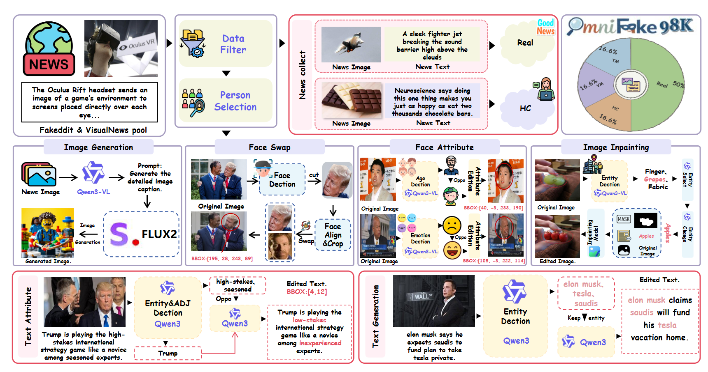
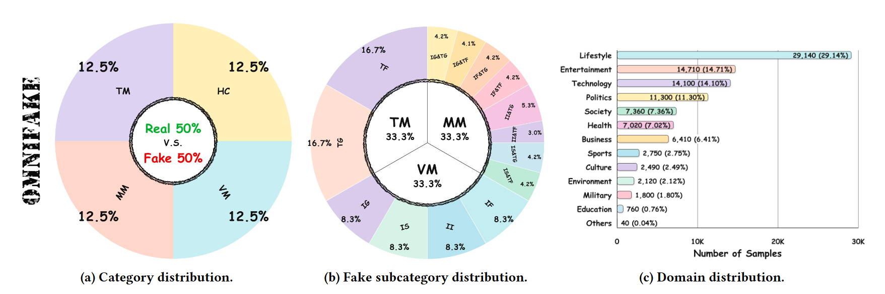

Why unified detection matters
A deployed system usually does not know whether a suspicious post is a rumor, a generated image, generated text, or a mixed attack. The detector must handle all of them under one decision space.
A benchmark dataset and unified baseline for detecting human-crafted and AI-synthesized multimodal misinformation.
Detecting deceptive multimodal content on social media has become an increasingly important problem. Two major types of deception dominate: human-crafted misinformation, such as rumors and misleading posts, and AI-generated content produced by image synthesis models or vision-language models (VLMs). However, these two types are usually addressed as separate tasks. Consequently, existing models are often specialized for only one type of fake content. In real deployments, however, the fake-content type of an incoming multimodal post is typically unknown, which limits the practicality of such specialized systems. To study this setting, we build OmniFake, a benchmark with 98K samples that combines human-curated misinformation from existing resources with newly created AI-generated examples. To address this new task, we propose Unified Multimodal Fake Content Detection (UMFDet), a framework designed to handle both types of deception. UMFDet builds on a VLM backbone augmented with a Category-aware Mixture-of-Experts (CMoE) adapter to capture category-specific cues. We further introduce an Expert-wise Discriminative Regularization to enforce intra-expert compactness. In addition, cross-modal consistency alignment is proposed to improve the perceptual capability of experts for handling different deception types. Experiments show that UMFDet consistently outperforms competitive specialized baselines across both deception types. The dataset and code will be made publicly available.
We study unified multimodal misinformation detection: a single model must decide whether an image-text post is real, human-crafted misinformation, vision-manipulated, text-manipulated, or mixed-manipulated.
Existing fake-news detectors and generative-content detectors are often trained as separate systems. In real social-media deployment, however, the type of deception is unknown before prediction. OmniFake turns this into a unified five-class benchmark, and UMFDet uses category-aware expert adapters to separate real evidence, human deception cues, and AI-synthesized visual or textual cues.
Overview
OmniFake is built for a more realistic verification setting where human-crafted misinformation and AI-generated misinformation coexist. The benchmark contains balanced real and fake samples, multiple manipulation categories, and broad news-domain coverage. UMFDet addresses this task with a VLM backbone, Category-aware Mixture-of-Experts adapters, expert-wise discriminative regularization, and cross-modal consistency alignment.
A deployed system usually does not know whether a suspicious post is a rumor, a generated image, generated text, or a mixed attack. The detector must handle all of them under one decision space.
OmniFake provides a 98K-sample benchmark with real news and four fake-content families: human-crafted, vision manipulation, text manipulation, and mixed manipulation.
UMFDet predicts a unified class label for each image-text post and learns category-specific cues through expert routing, discriminative regularization, and cross-modal consistency alignment.
Motivation
Social media misinformation is no longer a single problem. Human-written rumors, manipulated images, generated text, and mixed multimodal attacks can appear together. OmniFake frames this as a unified detection task instead of assuming the fake category is known beforehand.

Visualization
The visualization compares text feature distributions from BERT, CLIP-ViT-B/32, and Qwen-2.5-7B. Stronger separation helps distinguish human-crafted and AI-synthesized textual signals.

Dataset
OmniFake combines curated real and human-crafted misinformation with generated visual, textual, and mixed manipulations. The benchmark is balanced across real and fake samples while preserving broad domain coverage.


Examples
The benchmark contains realistic samples where the evidence can come from the text, image, or the interaction between modalities. This setting pressures a detector to identify the actual deception type instead of relying on a single shortcut.

Method
UMFDet builds on a frozen multimodal backbone and inserts trainable expert adapters. Category-aware experts separate reality, deception, and synthesis cues, while regularization and cross-modal alignment improve the model's ability to handle unknown misinformation types.
Routes multimodal tokens through experts specialized for reality, deception, and synthesis cues.
Encourages compact intra-expert representations and clearer separation across experts.
Aligns visual and textual evidence so the model can reason over inconsistent or generated content.

Results
The experiments evaluate UMFDet from three perspectives: five-class recognition on OmniFake, zero-shot binary detection on MMFakeBench, and transfer to DGM4. Across these settings, UMFDet shows stronger average F1, better class balance, and better transfer than general VLMs and specialized multimodal baselines.
Table 3 compares zero-shot VLMs and OmniFake-trained multimodal methods. UMFDet achieves the strongest average five-class F1 and is especially strong on real, human-crafted, text-manipulated, and mixed manipulation categories.
| Setting | Method | Venue | Real | Human-crafted | Vision Manipulation | Text Manipulation | Mixed Manipulation | AVG 5-class | ||||||||||||
|---|---|---|---|---|---|---|---|---|---|---|---|---|---|---|---|---|---|---|---|---|
| Pre | Recall | F1 | Pre | Recall | F1 | Pre | Recall | F1 | Pre | Recall | F1 | Pre | Recall | F1 | Pre | Recall | F1 | |||
| Zero-shot | Gemini-2.5 | - | 42.86 | 42.66 | 42.76 | 55.00 | 47.50 | 50.98 | 54.55 | 56.55 | 55.53 | 42.86 | 58.00 | 50.30 | 19.99 | 47.35 | 14.99 | 43.05 | 50.41 | 42.91 |
| Zero-shot | Qwen2.5-VL-72B | - | 44.81 | 49.87 | 47.20 | 36.08 | 40.38 | 38.11 | 45.61 | 46.50 | 46.05 | 41.54 | 44.91 | 43.16 | 47.00 | 42.64 | 44.71 | 43.01 | 44.86 | 43.85 |
| Zero-shot | DeepSeek-VL2-27B | - | 41.21 | 46.18 | 43.55 | 46.67 | 43.18 | 44.86 | 48.11 | 50.12 | 49.09 | 38.95 | 37.01 | 37.95 | 41.29 | 47.56 | 44.20 | 43.24 | 44.81 | 43.93 |
| Zero-shot | GPT-4o | - | 60.00 | 59.24 | 60.59 | 43.70 | 37.58 | 40.41 | 41.34 | 45.22 | 42.78 | 40.51 | 51.59 | 45.36 | 44.58 | 31.21 | 35.32 | 46.03 | 44.97 | 44.89 |
| OmniFake | FKA-OWL | MM'24 | 78.71 | 93.47 | 85.40 | 88.18 | 72.08 | 78.32 | 65.37 | 56.09 | 60.38 | 49.91 | 21.67 | 30.22 | 61.35 | 69.97 | 65.38 | 68.70 | 62.65 | 64.15 |
| OmniFake | HAMMER | CVPR'24 | 82.98 | 80.93 | 81.94 | 74.98 | 73.67 | 74.32 | 71.21 | 73.86 | 72.51 | 52.12 | 51.30 | 51.70 | 74.17 | 72.97 | 73.57 | 71.09 | 70.55 | 70.81 |
| OmniFake | MIMOE | WWW'25 | 81.33 | 86.51 | 83.84 | 80.06 | 66.31 | 72.54 | 69.12 | 78.02 | 73.30 | 56.81 | 51.45 | 53.45 | 73.56 | 65.86 | 69.50 | 72.58 | 69.83 | 70.93 |
| OmniFake | GLPN | ACL'25 | 59.81 | 95.45 | 73.54 | 69.80 | 57.79 | 63.23 | 51.15 | 12.66 | 20.30 | 22.22 | 0.81 | 1.57 | 54.75 | 27.60 | 36.70 | 51.55 | 38.86 | 39.07 |
| OmniFake | UMFDet (Ours) | - | 87.04 | 92.94 | 89.89 | 92.17 | 82.22 | 86.92 | 79.49 | 63.23 | 70.43 | 71.95 | 61.85 | 66.52 | 68.68 | 81.17 | 74.40 | 82.56 | 82.53 | 82.23 |
Table 4 shows that training on OmniFake improves transfer to MMFakeBench. UMFDet obtains the highest validation F1 and test F1 among the compared train-on-OmniFake methods, while also keeping precision high.
| Model | Language Model | Prompt | Validation (1000) | Test (10000) | ||||||
|---|---|---|---|---|---|---|---|---|---|---|
| F1 | Precision | Recall | ACC | F1 | Precision | Recall | ACC | |||
| LVLMs with 7B Parameter | ||||||||||
| InstructBLIP | Vicuna-7B | Standard | 14.7 | 30.8 | 13.2 | 8.1 | 16.1 | 40.5 | 14.2 | 8.8 |
| Qwen-VL | Qwen-7B | Standard | 43.6 | 50.6 | 44.9 | 60.3 | 44.0 | 51.6 | 45.2 | 60.5 |
| PandaGPT | Vicuna-7B | Standard | 24.6 | 60.6 | 50.5 | 30.9 | 24.1 | 61.7 | 50.4 | 30.6 |
| mPLUG-Owl2 | LLaMA2-7B | Standard | 47.2 | 64.9 | 52.3 | 70.6 | 48.7 | 71.1 | 53.3 | 71.4 |
| LLaVA-1.6 | Vicuna-7B | Standard | 48.1 | 48.2 | 48.5 | 59.5 | 52.5 | 53.0 | 52.6 | 62.5 |
| LVLMs with 13B Parameter | ||||||||||
| InstructBLIP | Vicuna-13B | Standard | 41.1 | 35.0 | 49.9 | 69.9 | 41.1 | 35.0 | 49.9 | 69.8 |
| InstructBLIP | Vicuna-13B | MMD-Agent | 51.3 | 53.4 | 54.0 | 53.1 | 47.9 | 50.1 | 50.1 | 49.9 |
| LLaVA-1.6 | Vicuna-13B | Standard | 41.1 | 35.0 | 50.0 | 69.7 | 42.3 | 57.3 | 50.1 | 69.5 |
| LLaVA-1.6 | Vicuna-13B | MMD-Agent | 51.8 | 66.7 | 54.6 | 71.4 | 50.2 | 67.3 | 53.9 | 71.3 |
| Train on OmniFake | ||||||||||
| HAMMER | - | - | 56.68 | 69.54 | 57.62 | 57.64 | 57.29 | 71.32 | 58.11 | 58.21 |
| UMFDet (Ours) | Florence2-0.7B | Ours | 61.74 | 70.16 | 61.14 | 61.17 | 61.70 | 70.94 | 61.12 | 61.14 |
Table 5 compares multimodal learning methods on DGM4. UMFDet achieves the best average ACC and F1, and also performs strongly on the AI-synthesized split, indicating that OmniFake training improves cross-dataset robustness.
| Method | Venue | AVG | Real | AI-synthesized | |||||||||
|---|---|---|---|---|---|---|---|---|---|---|---|---|---|
| ACC | Pre | Recall | F1 | ACC | Pre | Recall | F1 | ACC | Pre | Recall | F1 | ||
| Qwen-2.5-VL-72B | arXiv'25 | 60.06 | 57.48 | 57.81 | 57.64 | 60.46 | 42.71 | 50.92 | 46.46 | 60.12 | 72.26 | 64.71 | 68.28 |
| GPT-4o | arXiv'24 | 62.14 | 59.20 | 58.45 | 58.82 | 62.75 | 45.03 | 52.86 | 48.56 | 61.93 | 74.10 | 66.48 | 69.55 |
| DeepSeek-VL2-27B | arXiv'25 | 57.23 | 62.51 | 57.12 | 59.69 | 59.54 | 57.17 | 66.14 | 61.33 | 43.21 | 67.82 | 48.03 | 56.23 |
| Gemini-2.5 | arXiv'25 | 67.20 | 64.05 | 63.30 | 63.67 | 67.90 | 48.60 | 57.10 | 52.51 | 66.85 | 78.90 | 71.20 | 74.85 |
| MIMOE | WWW'25 | 62.11 | 58.74 | 59.32 | 58.84 | 62.11 | 44.02 | 50.98 | 47.25 | 62.11 | 73.45 | 67.65 | 70.43 |
| FKA-OWL | MM'24 | 76.37 | 76.91 | 78.58 | 79.30 | 69.62 | 74.09 | 70.47 | 82.82 | 76.14 | 93.92 | 72.67 | 81.94 |
| HAMMER | CVPR'24 | 80.62 | 81.27 | 85.13 | 83.16 | 80.63 | 66.87 | 82.83 | 74.00 | 80.63 | 84.28 | 89.53 | 86.83 |
| UMFDet (Ours) | Ours | 83.10 | 81.35 | 84.62 | 83.20 | 86.88 | 69.21 | 86.88 | 77.14 | 81.18 | 92.85 | 81.18 | 86.62 |

Citation
@misc{li2025unifiedmultimodalmisinformationdetection,
title = {Towards Unified Multimodal Misinformation Detection in Social Media: A Benchmark Dataset and Baseline},
author = {Haiyang Li and Yaxiong Wang and Shengeng Tang and Lianwei Wu and Lechao Cheng and Zhun Zhong},
year = {2025},
eprint = {2509.25991},
archivePrefix = {arXiv},
primaryClass = {cs.AI},
url = {https://arxiv.org/abs/2509.25991}
}